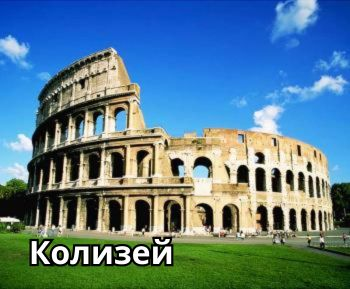
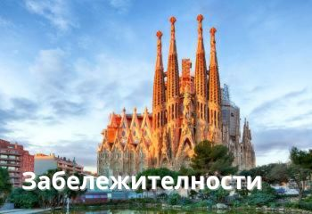
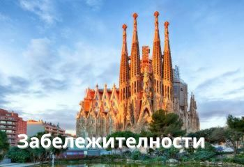

Дестинации
-
Италия

Италия често e наричана страна-музей, тъй като в нея се намира три четвърти от културното наследство на Европа. Италия се състои от много провинции эи градове със самобитна култура, богата история и уникални традиции. Всеки един от тях с право се чувства специален и се гордее с това.Обиколка на Италия ще позволи на всеки турист да посети напълно различни региони на страната: ски курорти в заснежените Алпи и Доломитите, галерии и винарни в Тоскана и Емилия-Романя, луксозни магазини в Рим и Милано, колоритни и комфортни хотели в Иския и Сицилия, както и в курортите Фиуджи и Абано Терме.Тази страна с богата история няма да остави равнодушен всеки турист.Почивка в Италия - това е едно от тези удоволствия, които ще искате да се повтарят отново и отново.
Варианти за почивка
-
Романтична почивка
Венеция - романтичната столица на Европа, която просто е задължително да посетите! Той е прекрасен град за туристически разходки, меден месец, пазаруване и сватбени фотосесии.
-
Семейна почивка
Ски курорти, слънчеви плажове и дори термални извори могат да бъдат посещавани от цялото семейство. Високото ниво на обслужване в хотелите ще направи почивката за вашето семейство комфортна и безгрижна.
-

Разглеждане на забележителности
Италия е невероятно богата на музеи и исторически паметници. Тук можете да посетите прочутия Колизеум и Ватикана и много други.
-
-
Гърция
Гърция - това не e само страната на маслините и синьото море, на слънце и бели пясъчни плажове, но и страната с най-дългата брегова ивица в Европа - повече от 13 500 км, страна с богата история и култура.В Гърция митове и легенди оживяват, разкриват се тайните на древната история, където има място за всички под яркото слънце и топлото море. За да видите всички забележителности на тази страна трябва да прекарат живота си там. А ако изберете да почивате в Гърция, винаги ще има къде да отидете, дори и ако сте били в курорта или остров повече от веднъж. Здравословна и вкусна храна, 300 слънчеви дни годишно и прекрасни пейзажи - всичко това прави Гърция идеалното място за почивка.
Варианти за почивка
-

Семейна почивка
На първо място Гърция е известна със своя благоприятен климат, инфраструктура и подходящи условия за семейна почивка. Предлага се голям избор от хотели за вашето семейно пътуване.
-
Младежка почивка
Гърция е не само тихи плажове и приятни разходки по местните живописни улици. Има и курорти, в които животът кипи ден и нощ! Посетете Крит, Родос или Миконос - има денонощни барове, зрелищни вечерни шоу програми, музика на живо, дискотеки, развлекателни центрове, които работят цяла нощ.
-
Романтична почивка
Живописни гръцки градове с множество комфортни хотели - това е отлично място за сватбена церемония, меден месец и романтично пътуване. Пътувайте заедно до Егейско море, разходете се по улиците на Атина, насладете се на вината на о. Крит, какво може да бъде по-добре за една млада двойка?
-
-
Испания
Мек средиземноморски климат, добре развит туристически сектор, множество исторически паметници, изобилие на морска храна, плодове и зеленчуци - всичко това прави Испания любимо място за отдих на туристи от цял свят! Испания е най-голямата европейска средиземноморска страна с многобройни курорти и плажове, предлагащи слънце и активни развлечения. Тук ще се насладите на вечната пролет на Канарския архипелаг, нестихващия нощен живот на Балеарските острови, жаркото слънце на Андалусия и на многоликия културен мегаполис Барселона.
Варианти за почивка
-

Познавателна почивка
Испания е страна с дълга история, тя е съхранила средновековни замъци, амфитеатри, мостове и дори най-старите паметници от ерата на палеолита. Тук можете да се насладите на готическата архитектура, наследството на Салвадор Дали, да видите огненото фламенко и да присъствате на истински рицарски дуел.
-

Шопинг туризъм
Тук можете да закупите неща от подиума на много добра цена. В Испания има голям брой магазини на известни и местни марки. Визата за посещението на Испания е „обща“ шенгенска виза, така че ако желаете, можете да посетите и известни обекти на най-близките европейски държави.
-
Младежка почивка
Можете да дойдете в Испания и да посетите ярък карнавал, да посетите Бенидорм - местният Лас Вегас, Ибиса - световната клубна столица, Майорка, Салоу, както и плажни дискотеки, всякакви барове, ресторанти и много други.
-
